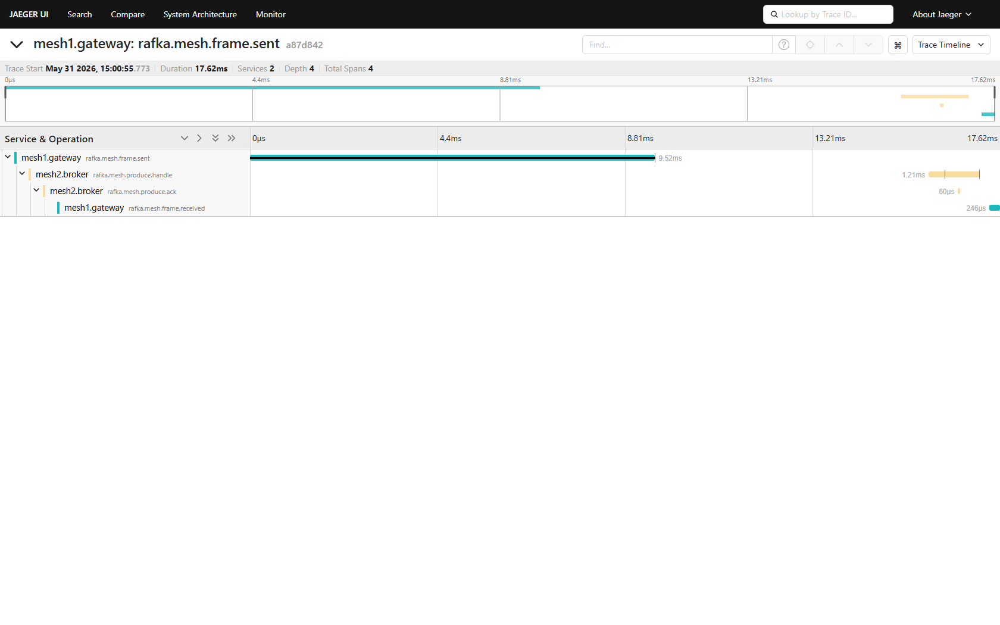
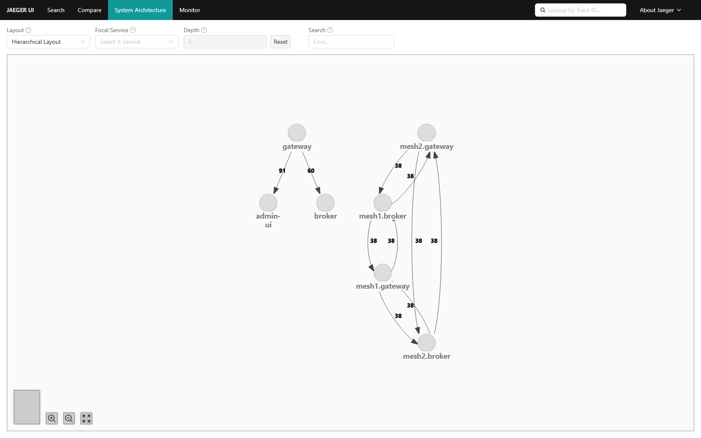
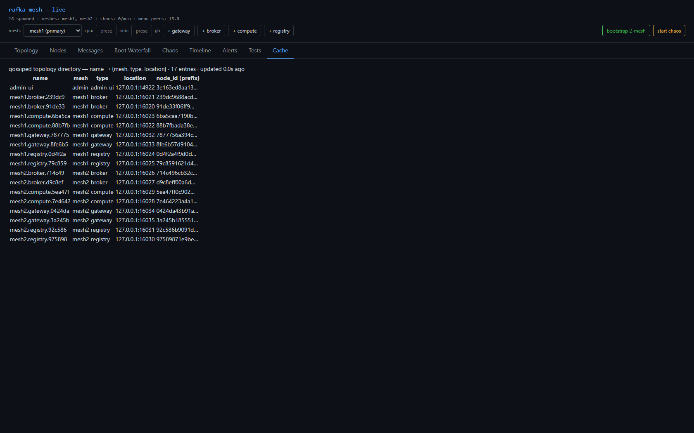
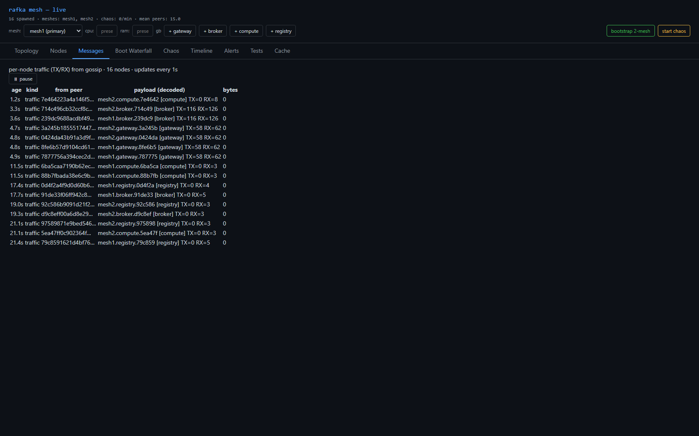

node_name=<mesh>.<type>.<6hex> (e.g. mesh1.broker.239dc9), service.name=<mesh>.<type>, service.namespace=<mesh>, service.instance.id=node_id; node self-names; ordinal counter gone; RAFKA_MESH_ID required, fail-fast, no default.Resource::default().merge(service.name) so namespace + instance.id survive.W3CCarrier via the global propagator (traceparent + tracestate).frames_sent/recv_total.open_bi; broker emits produce.handle+produce.ack (W3C-parented); gateway reads the ack → reverse edge.produce.handle/produce.ack, op_kind="ack".cargo check --workspace --tests --no-default-features → 0 errors, 0 warnings (re-ran)./api/dependencies: distinct per-mesh nodes; bidirectional mesh1.gateway↔mesh2.broker (36 each); mesh-qualified→admin-ui = 0 (CC gone; the only admin-ui edge has a flat gateway parent = old :19092 fleet).frame.sent → produce.handle → produce.ack → frame.received, Services 2.mesh1.broker.239dc9-style names, hex matching node_id.

The mesh-qualified cluster (all 38/38 bidirectional, no admin-ui edge) is sprint-13. The separategateway→admin-ui/gateway→brokercomponent is the still-running pre-sprint-13:19092fleet (flat names + old CC) — verified via 0 mesh-qualified→admin-ui edges.
<mesh>.<type>.<6hex> names

| Criterion | Result |
|---|---|
| cargo check 0/0 | ✅ lead re-ran |
| Distinct per-mesh service nodes | ✅ |
| Cross-mesh write + ack reverse arrow | ✅ 36/36 |
| Broker work in trace (produce.handle→ack) | ✅ |
| W3C traceparent + tracestate over QUIC | ✅ |
| No mesh-qualified → admin-ui (CC gone) | ✅ 0 edges |
| Self-named, mesh_id required | ✅ |
admin-ui/admin mesh) — NOT normalized. "Node like any other" lands in sprint-14 (backbone): until the backbone gives it per-mesh summaries it must special-observe every mesh to render the global view. Deferred there, not dropped.gateway → admin-ui edge is the old :19092 fleet (0 mesh-qualified→admin-ui).4-boot-waterfall.png empty — Jaeger search-index flakiness; /api/boot-trace returns the full 6-span chain. Not a sprint-13 exit criterion.Backbone control plane → sprint-14 (also normalizes admin-ui) · add/delete → 15 · forced relay → 16 · chaos → 17.